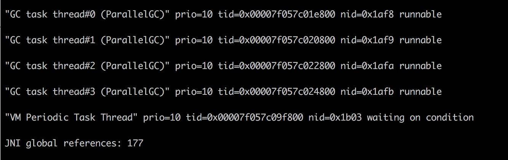

- 00 开篇词：JVM，一块难啃的骨头.md
- 01 一探究竟：为什么需要 JVM？它处在什么位置？.md
- 02 大厂面试题：你不得不掌握的 JVM 内存管理.md
- 03 大厂面试题：从覆盖 JDK 的类开始掌握类的加载机制.md
- 04 动手实践：从栈帧看字节码是如何在 JVM 中进行流转的.md
- 05 大厂面试题：得心应手应对 OOM 的疑难杂症.md
- 06 深入剖析：垃圾回收你真的了解吗？（上）.md
- 07 深入剖析：垃圾回收你真的了解吗？（下）.md
- 08 大厂面试题：有了 G1 还需要其他垃圾回收器吗？.md
- 09 案例实战：亿级流量高并发下如何进行估算和调优.md
- 10 第09讲：案例实战：面对突如其来的 GC 问题如何下手解决.md
- 11 第10讲：动手实践：自己模拟 JVM 内存溢出场景.md
- 12 第11讲：动手实践：遇到问题不要慌，轻松搞定内存泄漏.md
- 13 工具进阶：如何利用 MAT 找到问题发生的根本原因.md
- 14 动手实践：让面试官刮目相看的堆外内存排查.md
- 15 预警与解决：深入浅出 GC 监控与调优.md
- 16 案例分析：一个高死亡率的报表系统的优化之路.md
- 17 案例分析：分库分表后，我的应用崩溃了.md
- 18 动手实践：从字节码看方法调用的底层实现.md
- 19 大厂面试题：不要搞混 JMM 与 JVM.md
- 20 动手实践：从字节码看并发编程的底层实现.md
- 21 动手实践：不为人熟知的字节码指令.md
- 22 深入剖析：如何使用 Java Agent 技术对字节码进行修改.md
- 23 动手实践：JIT 参数配置如何影响程序运行？.md
- 24 案例分析：大型项目如何进行性能瓶颈调优？.md
- 25 未来：JVM 的历史与展望.md
- 26 福利：常见 JVM 面试题补充.md
12 第11讲：动手实践：遇到问题不要慌，轻松搞定内存泄漏
当一个系统在发生 OOM 的时候，行为可能会让你感到非常困惑。因为 JVM 是运行在操作系统之上的，操作系统的一些限制，会严重影响 JVM 的行为。故障排查是一个综合性的技术问题，在日常工作中要增加自己的知识广度。多总结、多思考、多记录，这才是正确的晋级方式。
现在的互联网服务，一般都做了负载均衡。如果一个实例发生了问题，不要着急去重启。万能的重启会暂时缓解问题，但如果不保留现场，可能就错失了解决问题的根本，担心的事情还会到来。
所以，当实例发生问题的时候，第一步是隔离，第二步才是问题排查。什么叫隔离呢？就是把你的这台机器从请求列表里摘除，比如把 nginx 相关的权重设成零。在微服务中，也有相应的隔离机制，这里默认你已经有了（面试也默认你已经有隔离功能了）。
本课时的内容将涉及非常多的 Linux 命令，对 JVM 故障排查的帮助非常大，你可以逐个击破。
1. GC 引起 CPU 飙升
我们有个线上应用，单节点在运行一段时间后，CPU 的使用会飙升，一旦飙升，一般怀疑某个业务逻辑的计算量太大，或者是触发了死循环（比如著名的 HashMap 高并发引起的死循环），但排查到最后其实是 GC 的问题。
在 Linux 上，分析哪个线程引起的 CPU 问题，通常有一个固定的步骤。我们下面来分解这个过程，这是面试频率极高的一个问题。

（1）使用 top 命令，查找到使用 CPU 最多的某个进程，记录它的 pid。使用 Shift + P 快捷键可以按 CPU 的使用率进行排序。
top
（2）再次使用 top 命令，加 -H 参数，查看某个进程中使用 CPU 最多的某个线程，记录线程的 ID。
top -Hp $pid
（3）使用 printf 函数，将十进制的 tid 转化成十六进制。
printf %x $tid
（4）使用 jstack 命令，查看 Java 进程的线程栈。
jstack $pid >$pid.log
（5）使用 less 命令查看生成的文件，并查找刚才转化的十六进制 tid，找到发生问题的线程上下文。
less $pid.log
我们在 jstack 日志中找到了 CPU 使用最多的几个线程。

可以看到问题发生的根源，是我们的堆已经满了，但是又没有发生 OOM，于是 GC 进程就一直在那里回收，回收的效果又非常一般，造成 CPU 升高应用假死。
接下来的具体问题排查，就需要把内存 dump 一份下来，使用 MAT 等工具分析具体原因了（将在第 12 课时讲解）。
2. 现场保留
可以看到这个过程是繁杂而冗长的，需要记忆很多内容。现场保留可以使用自动化方式将必要的信息保存下来，那一般在线上系统会保留哪些信息呢？下面我进行一下总结。
2.1. 瞬时态和历史态
为了协助我们的分析，这里创造了两个名词：瞬时态和历史态。瞬时态是指当时发生的、快照类型的元素；历史态是指按照频率抓取的，有固定监控项的资源变动图。
有很多信息，比如 CPU、系统内存等，瞬时态的价值就不如历史态来的直观一些。因为瞬时状态无法体现一个趋势性问题（比如斜率、求导等），而这些信息的获取一般依靠监控系统的协作。
但对于 lsof、heap 等，这种没有时间序列概念的混杂信息，体积都比较大，无法进入监控系统产生有用价值，就只能通过瞬时态进行分析。在这种情况下，瞬时态的价值反而更大一些。我们常见的堆快照，就属于瞬时状态。
问题不是凭空产生的，在分析时，一般要收集系统的整体变更集合，比如代码变更、网络变更，甚至数据量的变化。

接下来对每一项资源的获取方式进行介绍。
2.2. 保留信息
（1）系统当前网络连接
ss -antp > $DUMP_DIR/ss.dump 2>&1
其中，ss 命令将系统的所有网络连接输出到 ss.dump 文件中。使用 ss 命令而不是 netstat 的原因，是因为 netstat 在网络连接非常多的情况下，执行非常缓慢。
后续的处理，可通过查看各种网络连接状态的梳理，来排查 TIME_WAIT 或者 CLOSE_WAIT，或者其他连接过高的问题，非常有用。
线上有个系统更新之后，监控到 CLOSE_WAIT 的状态突增，最后整个 JVM 都无法响应。CLOSE_WAIT 状态的产生一般都是代码问题，使用 jstack 最终定位到是因为 HttpClient 的不当使用而引起的，多个连接不完全主动关闭。
（2）网络状态统计
netstat -s > $DUMP_DIR/netstat-s.dump 2>&1
此命令将网络统计状态输出到 netstat-s.dump 文件中。它能够按照各个协议进行统计输出，对把握当时整个网络状态，有非常大的作用。
sar -n DEV 1 2 > $DUMP_DIR/sar-traffic.dump 2>&1
上面这个命令，会使用 sar 输出当前的网络流量。在一些速度非常高的模块上，比如 Redis、Kafka，就经常发生跑满网卡的情况。如果你的 Java 程序和它们在一起运行，资源则会被挤占，表现形式就是网络通信非常缓慢。
（3）进程资源
lsof -p $PID > $DUMP_DIR/lsof-$PID.dump
这是个非常强大的命令，通过查看进程，能看到打开了哪些文件，这是一个神器，可以以进程的维度来查看整个资源的使用情况，包括每条网络连接、每个打开的文件句柄。同时，也可以很容易的看到连接到了哪些服务器、使用了哪些资源。这个命令在资源非常多的情况下，输出稍慢，请耐心等待。
（4）CPU 资源
mpstat > $DUMP_DIR/mpstat.dump 2>&1
vmstat 1 3 > $DUMP_DIR/vmstat.dump 2>&1
sar -p ALL > $DUMP_DIR/sar-cpu.dump 2>&1
uptime > $DUMP_DIR/uptime.dump 2>&1
主要用于输出当前系统的 CPU 和负载，便于事后排查。这几个命令的功能，有不少重合，使用者要注意甄别。
（5）I/O 资源
iostat -x > $DUMP_DIR/iostat.dump 2>&1
一般，以计算为主的服务节点，I/O 资源会比较正常，但有时也会发生问题，比如日志输出过多，或者磁盘问题等。此命令可以输出每块磁盘的基本性能信息，用来排查 I/O 问题。在第 8 课时介绍的 GC 日志分磁盘问题，就可以使用这个命令去发现。
（6）内存问题
free -h > $DUMP_DIR/free.dump 2>&1
free 命令能够大体展现操作系统的内存概况，这是故障排查中一个非常重要的点，比如 SWAP 影响了 GC，SLAB 区挤占了 JVM 的内存。
（7）其他全局
ps -ef > $DUMP_DIR/ps.dump 2>&1
dmesg > $DUMP_DIR/dmesg.dump 2>&1
sysctl -a > $DUMP_DIR/sysctl.dump 2>&1
dmesg 是许多静悄悄死掉的服务留下的最后一点线索。当然，ps 作为执行频率最高的一个命令，它当时的输出信息，也必然有一些可以参考的价值。
另外，由于内核的配置参数，会对系统和 JVM 产生影响，所以我们也输出了一份。
（8）进程快照，最后的遗言（jinfo）
${JDK_BIN}jinfo $PID > $DUMP_DIR/jinfo.dump 2>&1
此命令将输出 Java 的基本进程信息，包括环境变量和参数配置，可以查看是否因为一些错误的配置造成了 JVM 问题。
（9）dump 堆信息
${JDK_BIN}jstat -gcutil $PID > $DUMP_DIR/jstat-gcutil.dump 2>&1
${JDK_BIN}jstat -gccapacity $PID > $DUMP_DIR/jstat-gccapacity.dump 2>&1
jstat 将输出当前的 gc 信息。一般，基本能大体看出一个端倪，如果不能，可将借助 jmap 来进行分析。
（10）堆信息
${JDK_BIN}jmap $PID > $DUMP_DIR/jmap.dump 2>&1
${JDK_BIN}jmap -heap $PID > $DUMP_DIR/jmap-heap.dump 2>&1
${JDK_BIN}jmap -histo $PID > $DUMP_DIR/jmap-histo.dump 2>&1
${JDK_BIN}jmap -dump:format=b,file=$DUMP_DIR/heap.bin $PID > /dev/null 2>&1
jmap 将会得到当前 Java 进程的 dump 信息。如上所示，其实最有用的就是第 4 个命令，但是前面三个能够让你初步对系统概况进行大体判断。
因为，第 4 个命令产生的文件，一般都非常的大。而且，需要下载下来，导入 MAT 这样的工具进行深入分析，才能获取结果。这是分析内存泄漏一个必经的过程。
（11）JVM 执行栈
${JDK_BIN}jstack $PID > $DUMP_DIR/jstack.dump 2>&1
jstack 将会获取当时的执行栈。一般会多次取值，我们这里取一次即可。这些信息非常有用，能够还原 Java 进程中的线程情况。
top -Hp $PID -b -n 1 -c > $DUMP_DIR/top-$PID.dump 2>&1
为了能够得到更加精细的信息，我们使用 top 命令，来获取进程中所有线程的 CPU 信息，这样，就可以看到资源到底耗费在什么地方了。
（12）高级替补
kill -3 $PID
有时候，jstack 并不能够运行，有很多原因，比如 Java 进程几乎不响应了等之类的情况。我们会尝试向进程发送 kill -3 信号，这个信号将会打印 jstack 的 trace 信息到日志文件中，是 jstack 的一个替补方案。
gcore -o $DUMP_DIR/core $PID
对于 jmap 无法执行的问题，也有替补，那就是 GDB 组件中的 gcore，将会生成一个 core 文件。我们可以使用如下的命令去生成 dump：
${JDK_BIN}jhsdb jmap --exe ${JDK}java --core $DUMP_DIR/core --binaryheap
3. 内存泄漏的现象
稍微提一下 jmap 命令，它在 9 版本里被干掉了，取而代之的是 jhsdb，你可以像下面的命令一样使用。
jhsdb jmap --heap --pid 37340
jhsdb jmap --pid 37288
jhsdb jmap --histo --pid 37340
jhsdb jmap --binaryheap --pid 37340
heap 参数能够帮我们看到大体的内存布局，以及每一个年代中的内存使用情况。这和我们前面介绍的内存布局，以及在 VisualVM 中看到的 没有什么不同。但由于它是命令行，所以使用更加广泛。

histo 能够大概的看到系统中每一种类型占用的空间大小，用于初步判断问题。比如某个对象 instances 数量很小，但占用的空间很大，这就说明存在大对象。但它也只能看大概的问题，要找到具体原因，还是要 dump 出当前 live 的对象。
一般内存溢出，表现形式就是 Old 区的占用持续上升，即使经过了多轮 GC 也没有明显改善。我们在前面提到了 GC Roots，内存泄漏的根本就是，有些对象并没有切断和 GC Roots 的关系，可通过一些工具，能够看到它们的联系。
4. 一个卡顿实例
有一个关于服务的某个实例，经常发生服务卡顿。由于服务的并发量是比较高的，所以表现也非常明显。这个服务和我们第 8 课时的高并发服务类似，每多停顿 1 秒钟，几万用户的请求就会感到延迟。
我们统计、类比了此服务其他实例的 CPU、内存、网络、I/O 资源，区别并不是很大，所以一度怀疑是机器硬件的问题。
接下来我们对比了节点的 GC 日志，发现无论是 Minor GC，还是 Major GC，这个节点所花费的时间，都比其他实例长得多。
通过仔细观察，我们发现在 GC 发生的时候，vmstat 的 si、so 飙升的非常严重，这和其他实例有着明显的不同。
使用 free 命令再次确认，发现 SWAP 分区，使用的比例非常高，引起的具体原因是什么呢？
更详细的操作系统内存分布，从 /proc/meminfo 文件中可以看到具体的逻辑内存块大小，有多达 40 项的内存信息，这些信息都可以通过遍历 /proc 目录的一些文件获取。我们注意到 slabtop 命令显示的有一些异常，dentry（目录高速缓冲）占用非常高。
问题最终定位到是由于某个运维工程师执行了一句命令：
find / | grep "x"
他是想找一个叫做 x 的文件，看看在哪台服务器上，结果，这些老服务器由于文件太多，扫描后这些文件信息都缓存到了 slab 区上。而服务器开了 swap，操作系统发现物理内存占满后，并没有立即释放 cache，导致每次 GC 都要和硬盘打一次交道。
解决方式就是关闭 SWAP 分区。
swap 是很多性能场景的万恶之源，建议禁用。当你的应用真正高并发了，SWAP 绝对能让你体验到它魔鬼性的一面：进程倒是死不了了，但 GC 时间长的却让人无法忍受。
5. 内存泄漏

我们再来聊一下内存溢出和内存泄漏的区别。
内存溢出是一个结果，而内存泄漏是一个原因。内存溢出的原因有内存空间不足、配置错误等因素。
不再被使用的对象、没有被回收、没有及时切断与 GC Roots 的联系，这就是内存泄漏。内存泄漏是一些错误的编程方式，或者过多的无用对象创建引起的。
举个例子，有团队使用了 HashMap 做缓存，但是并没有设置超时时间或者 LRU 策略，造成了放入 Map 对象的数据越来越多，而产生了内存泄漏。
再来看一个经常发生的内存泄漏的例子，也是由于 HashMap 产生的。代码如下，由于没有重写 Key 类的 hashCode 和 equals 方法，造成了放入 HashMap 的所有对象都无法被取出来，它们和外界失联了。所以下面的代码结果是 null。
//leak example
import java.util.HashMap;
import java.util.Map;
public class HashMapLeakDemo {
public static class Key {
String title;
public Key(String title) {
this.title = title;
}
}
public static void main(String[] args) {
Map<Key, Integer> map = new HashMap<>();
map.put(new Key("1"), 1);
map.put(new Key("2"), 2);
map.put(new Key("3"), 2);
Integer integer = map.get(new Key("2"));
System.out.println(integer);
}
}
即使提供了 equals 方法和 hashCode 方法，也要非常小心，尽量避免使用自定义的对象作为 Key。仓库中 dog 目录有一个实际的、有问题的例子，你可以尝试排查一下。
再看一个例子，关于文件处理器的应用，在读取或者写入一些文件之后，由于发生了一些异常，close 方法又没有放在 finally 块里面，造成了文件句柄的泄漏。由于文件处理十分频繁，产生了严重的内存泄漏问题。
另外，对 Java API 的一些不当使用，也会造成内存泄漏。很多同学喜欢使用 String 的 intern 方法，但如果字符串本身是一个非常长的字符串，而且创建之后不再被使用，则会造成内存泄漏。
import java.util.UUID;
public class InternDemo {
static String getLongStr() {
StringBuilder sb = new StringBuilder();
for (int i = 0; i < 100000; i++) {
sb.append(UUID.randomUUID().toString());
}
return sb.toString();
}
public static void main(String[] args) {
while (true) {
getLongStr().intern();
}
}
}
6. 小结

本课时介绍了很多 Linux 命令，用于定位分析问题，所有的命令都是可以实际操作的，能够让你详细地把握整个 JVM 乃至操作系统的运行状况。其中，jinfo、jstat、jstack、jhsdb（jmap）等是经常被使用的一些工具，尤其是 jmap，在分析处理内存泄漏问题的时候，是必须的。
同时还介绍了保留现场的工具和辅助分析的方法论，遇到问题不要慌，记得隔离保存现场。
接下来我们看了一个实际的例子，由于 SWAP 的启用造成的服务卡顿。SWAP 会引起很多问题，在高并发服务中一般是关掉它。从这个例子中也可以看到，影响 GC，甚至是整个 JVM 行为的因素，可能不仅限于 JVM 内部，故障排查也是一个综合性的技能。
最后，我们详细看了下内存泄漏的概念和几个实际的例子，从例子中能明显的看到内存泄漏的结果，但是反向去找这些问题代码就不是那么容易了。在后面的课时内容中，我们将使用 MAT 工具具体分析这个捉虫的过程。